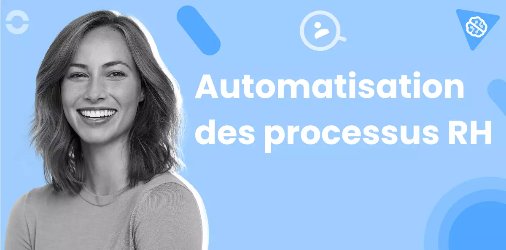
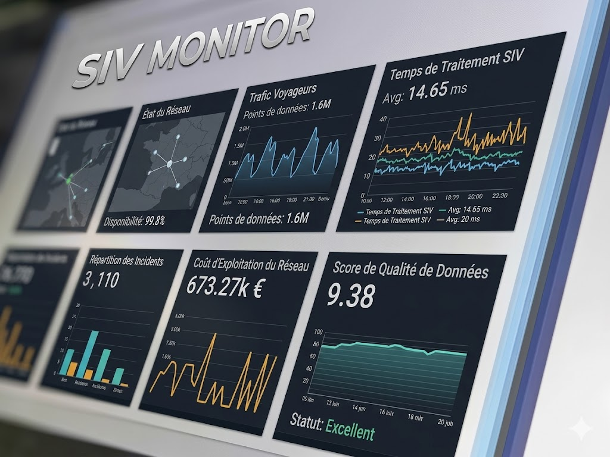
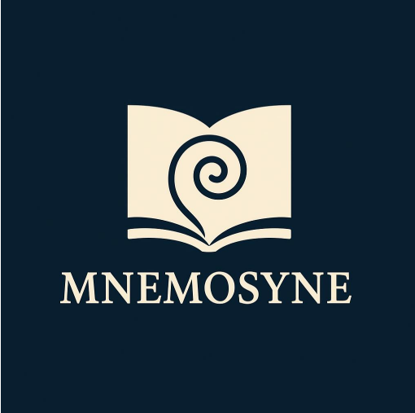
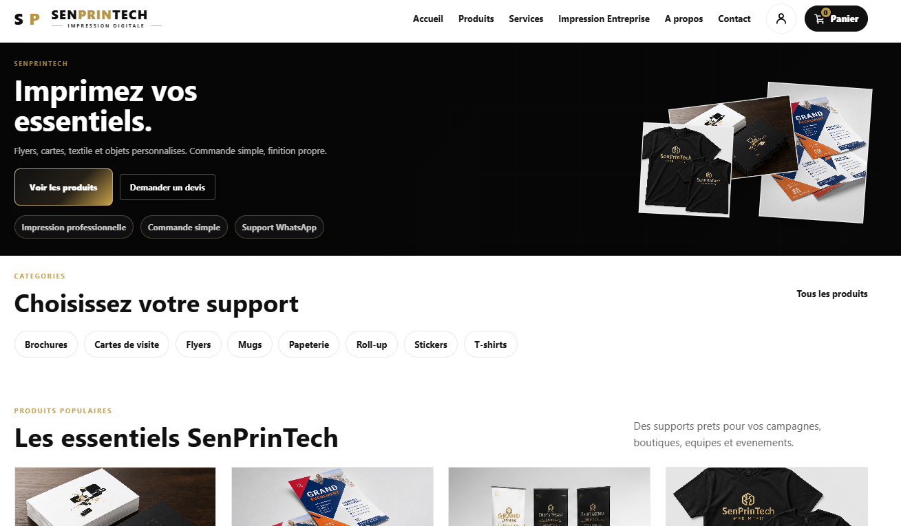
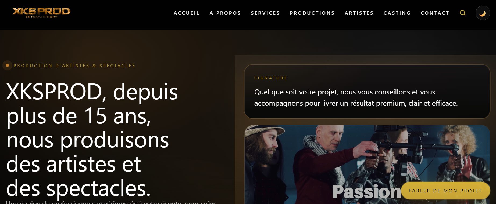
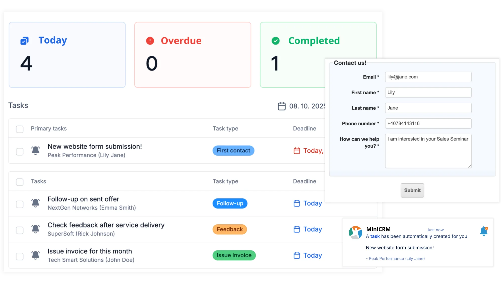

Backend & scripting
Python, Java, Bash, automatisation, traitement de données et logique applicative.
ÉTUDIANT BUT2 INFORMATIQUE — SORBONNE PARIS NORD
Je suis Papa Abou MBAYE, étudiant en BUT 2 Informatique à l'Université Sorbonne Paris Nord. Je cherche une alternance pour BUT3 en Île-de-France.
Stack technique
Un socle polyvalent pour concevoir, coder, tester et documenter des solutions informatiques.
Python, Java, Bash, automatisation, traitement de données et logique applicative.
HTML, CSS, JavaScript, responsive design et integration d'interfaces propres.
SQL, Git, GitHub, Linux et méthodes de travail organisées en projet.
Réseaux, architecture, bases embarquées, logique numérique et RISC-V.
Réalisations
Basé sur mes répertoires GitHub publics, voici quelques projets clés avec captures et liens directs.

Logiciel RH
J'ai conçu un logiciel RH avec un dashboard de suivi, un système d'alertes automatiques et une intégration IA pour analyser les données des employés.

Supervision
J'ai simulé un système embarqué ferroviaire capable d'acquérir des données en temps réel, de détecter des anomalies et d'en assurer le suivi.

Plateforme de suivi
J'ai participé en équipe à la création d'une plateforme web de suivi de cohorte avec une architecture modulaire et une gestion de base de données relationnelle.

Site d'impression
J'ai conçu un site vitrine et marchand pour présenter des supports d'impression, guider les commandes et mettre en avant les services d'une imprimerie.

Gestion
J'ai développé une application de gestion de notes étudiants en C, en travaillant sur la gestion mémoire et l'architecture modulaire du programme.
Streaming
Projet technique de streaming multimédia en Python, illustrant la gestion de flux et l'automatisation.

Audiovisuel
Projet créatif orienté production audiovisuelle et diffusion de contenus numériques.

CRM / Web
Mini application CRM pour gestion client et organisation interne, basée sur du HTML/CSS et de l'UI.
SAE BUT 2 Informatique
Une SAE centrée sur la démonstration des compétences : analyser un besoin universitaire, concevoir une solution de suivi de cohortes, exploiter des données ScoDoc et prendre du recul sur la progression entre le S3 et le S4.
Projet académique - IUT de Villetaneuse
Le projet Mnémosyne vise à faciliter le suivi des cohortes étudiantes des différents BUT de l'IUT de Villetaneuse, Université Sorbonne Paris Nord. Une cohorte correspond à l'ensemble des étudiants entrant dans une même formation au cours d'une même année.
L'application doit permettre d'observer l'Évolution des étudiants, les validations, redoublements, réorientations, abandons et changements de parcours, afin de transformer des données administratives en informations lisibles pour l'équipe pédagogique et l'établissement.
Aider à comprendre les trajectoires étudiantes et à prendre des décisions mieux informées.
Objectifs
Répondre à un besoin réel de suivi au sein d'un IUT où plusieurs formations BUT produisent des données hétérogènes.
Identifier les étudiants d'une même promotion et suivre leurs passages, validations, réorientations ou sorties.
Exploiter les exports et informations issues de ScoDoc en tenant compte de leur structure, de leurs limites et de leur qualité.
Produire des visualisations lisibles pour éclairer le pilotage pédagogique et institutionnel.
Architecture et conception
Elle permet de visualiser les cohortes, les parcours et les indicateurs utiles aux responsables pédagogiques.
Elle regroupe la gestion des imports, des paramètres, des règles métier et des scénarios d'analyse.
Les données ScoDoc sont synchronisées, nettoyées, structurées en base puis exploitées sous forme de tableaux et de diagrammes de Sankey.
Compétences BUT
Développer une application web répondant à un besoin identifié.
Contribution personnelleJ'ai participé à la construction des fonctionnalités de suivi, à l'intégration d'interfaces et à la transformation de règles métier en écrans exploitables.
Exemple : affichage des parcours d'une cohorte avec distinction entre validation, redoublement, réorientation et abandon.Améliorer la lisibilité, la performance et la maintenabilité du projet.
Contribution personnelleEn S4, j'ai travaillé sur l'amélioration du code existant, la correction de bugs et une interface plus fluide pour consulter les résultats.
Exemple : simplification de certains traitements et amélioration de l'expérience utilisateur autour des filtres et vues de cohorte.Comprendre l'environnement applicatif, les droits et la fiabilité du système.
Contribution personnelleJ'ai pris en compte la séparation entre consultation et administration, afin d'organiser les responsabilités dans l'application.
Exemple : distinction entre les écrans de visualisation et les actions de paramétrage ou de synchronisation.Modéliser, nettoyer et exploiter des données complexes.
Contribution personnelleJ'ai travaillé sur la compréhension des données ScoDoc, leur correspondance avec les notions de cohorte et leur structuration en base.
Exemple : prise en compte des parcours atypiques et des changements de formation dans le modèle de données.Organiser le travail, communiquer et intégrer les retours.
Contribution personnelleJ'ai contribué à la clarification du besoin, à la répartition des tâches et à la consolidation du projet entre le S3 et le S4.
Exemple : amélioration progressive du livrable après analyse des limites de la première version.Difficultés rencontrées
Ce que j'ai appris
Autoévaluation
J'ai progressé dans la reformulation d'un besoin métier, même si je dois encore mieux anticiper certains cas limites dès le cadrage.
Le projet m'a permis de renforcer l'intégration d'interfaces et la logique applicative, avec encore des progrès possibles sur les tests systématiques.
J'ai mieux compris la modélisation et l'exploitation de données réelles, en particulier quand les parcours ne sont pas linéaires.
J'ai appris à communiquer davantage sur l'avancement et à intégrer les contraintes des autres membres du groupe.
Je comprends mieux l'intérêt d'une architecture claire, mais je dois encore renforcer ma capacité à prévoir l'Évolution du code dès le départ.
J'ai progressé dans l'organisation, mais je peux encore améliorer la planification, la priorisation et le suivi régulier des tâches.
Évolution S3 / S4
Le travail du S4 consistait principalement à améliorer le projet développé au S3. Cette continuité m'a permis de comprendre qu'un projet informatique ne se limite pas à produire une première version : il faut aussi corriger, refactoriser, stabiliser et rendre l'application plus agréable à utiliser.
Regard critique
Ce qui a bien fonctionné est la capacité du groupe à transformer un besoin institutionnel complexe en une application compréhensible. Le sujet obligeait à relier la technique à une réalité universitaire : suivre des étudiants, comprendre leurs trajectoires et rendre ces informations lisibles.
Ce qui aurait pu être mieux réalisé concerne surtout l'anticipation. Certaines règles métier et certains parcours atypiques auraient gagné à être clarifiés plus tôt. J'ai compris qu'une bonne conception dépend autant de la qualité des échanges avec les utilisateurs que de la qualité du code.
Les compétences que je souhaite encore renforcer sont la conception logicielle, les tests, la documentation et la gestion de projet. Pour améliorer Mnémosyne, je proposerais d'ajouter davantage de contrôles sur la qualité des données, d'enrichir les visualisations et de mieux documenter les scénarios d'analyse.
Conclusion
Mnémosyne m'a permis de développer des compétences techniques, mais aussi une posture plus professionnelle : analyser avant de coder, justifier mes choix, améliorer un existant et comprendre l'impact d'une application sur ses utilisateurs. L'Évolution entre le S3 et le S4 montre une progression importante : je suis passé d'une logique de réalisation à une logique de consolidation, de qualité et d'expérience utilisateur. Cette SAE me prépare aux projets futurs du BUT Informatique, où il faudra produire des solutions fiables, compréhensibles et utiles.
Expérience professionnelle
Une expérience professionnelle analysée comme une preuve de compétences : comprendre un contexte réel, contribuer à un projet existant, travailler avec une équipe et prendre du recul sur ma progression.
Janvier - Mars 2026 · Cergy-Pontoise
Mon stage s'est déroulé dans un contexte professionnel orienté développement web, APIs et amélioration de solutions numériques. J'ai intégré une équipe projet avec l'objectif de contribuer à l'évolution d'une application existante, tout en découvrant les contraintes concrètes d'un environnement d'entreprise.
Cette expérience m'a permis de passer d'une logique de projet universitaire, souvent limitée dans le temps et le périmètre, à une logique professionnelle où la maintenabilité, la sécurité, la communication et la qualité du code deviennent essentielles.
Présentation du stage
XKSGROUP évolue dans un environnement numérique où les applications web, les services en ligne et les besoins clients nécessitent des solutions fiables, maintenables et sécurisées.
J'ai occupé un rôle de développeur full stack stagiaire, avec une participation aux fonctionnalités, aux échanges techniques et à la compréhension du code existant.
Contribuer au projet, progresser sur le développement web, comprendre les APIs, appliquer de bonnes pratiques et gagner en autonomie dans un cadre professionnel.
Développement web full-stack, APIs, logique backend, interfaces, gestion de versions, débogage, sécurité applicative et échanges réguliers avec l'équipe.
Missions réalisées
Participation à l'ajout et à l'amélioration de fonctionnalités visibles par les utilisateurs, avec une attention portée à la cohérence de l'interface et au comportement attendu.
Compréhension des échanges entre le frontend et le backend, manipulation de routes, vérification des réponses et prise en compte des erreurs possibles.
Découverte des enjeux de sécurisation applicative : validation des données, contrôle des accès, attention portée aux comportements non prévus et aux failles potentielles.
Analyse de l'existant, correction de points bloquants, amélioration progressive de certaines parties du projet et adaptation aux priorités de l'équipe.
Participation aux discussions techniques, clarification des besoins, demande de retours et intégration progressive des méthodes de travail professionnelles.
Compétences mobilisées
Développer des fonctionnalités web dans une application existante.
Contribution personnelleJ'ai participé à l'implémentation et à l'amélioration de composants applicatifs en tenant compte des besoins utilisateurs et des contraintes du projet.
Résultat : meilleure capacité à produire du code utile, intégré à un environnement réel.Améliorer la qualité, la lisibilité et la fiabilité de certaines parties du projet.
Contribution personnelleJ'ai analysé du code existant, identifié des points d'amélioration et travaillé sur des corrections ou ajustements progressifs.
Résultat : meilleure compréhension de la maintenabilité et de l'importance du refactoring.Comprendre l'environnement technique et les conditions de fonctionnement d'une application.
Contribution personnelleJ'ai découvert les contraintes liées à la configuration, aux accès, aux services applicatifs et à la mise en relation des différentes briques du projet.
Résultat : vision plus concrète du cycle de vie d'une application au-delà du code.Manipuler les données échangées entre interfaces, APIs et traitements backend.
Contribution personnelleJ'ai travaillé sur la compréhension des données reçues, envoyées, validées ou transformées par l'application.
Résultat : meilleure attention à la cohérence, à la validation et à la sécurité des données.S'intégrer à une équipe, communiquer et suivre les priorités.
Contribution personnelleJ'ai appris à rendre compte de mon avancement, poser des questions utiles, accepter les retours et adapter mon travail aux besoins du projet.
Résultat : progression dans l'autonomie, la communication et l'organisation professionnelle.Difficultés rencontrées
Ce que j'ai appris
Analyse réflexive
Ce stage m'a apporté une vision plus concrète du métier de développeur. J'ai compris qu'en entreprise, le développement ne consiste pas seulement à faire fonctionner une fonctionnalité : il faut aussi penser à la sécurité, à la lisibilité du code, à la continuité du projet et aux autres personnes qui devront comprendre ou modifier ce travail plus tard.
J'ai renforcé mes compétences en développement web, en APIs et en travail collaboratif. La principale différence avec les projets universitaires est le rapport à l'existant : à l'université, on démarre souvent un projet de zéro, alors qu'en entreprise il faut comprendre une base de code, respecter des choix déjà faits et avancer sans casser ce qui fonctionne.
Ce qui m'a surpris, c'est l'importance de la communication. Une question bien posée peut éviter beaucoup d'erreurs, et un retour d'équipe peut améliorer fortement la qualité d'une solution. Aujourd'hui, je prendrais encore plus de notes dès le début, je documenterais davantage mes choix et je chercherais plus tôt à comprendre l'architecture globale avant de me concentrer sur une tâche précise.
Autoévaluation
J'ai progressé dans la réalisation de fonctionnalités web, tout en comprenant mieux les exigences d'un projet réel.
J'ai mieux compris les échanges frontend-backend, les réponses, les erreurs et l'importance d'interfaces applicatives cohérentes.
J'ai appris à m'intégrer, à échanger sur mon travail et à tenir compte des retours techniques.
J'ai progressé, mais je dois encore gagner en précision dans la formulation de mes blocages
J'ai compris l'importance de la lisibilité et de la maintenabilité, mais je dois encore renforcer mes réflexes de tests et de documentation.
J'ai découvert plusieurs enjeux de sécurité applicative, avec une marge de progression sur l'anticipation systématique des risques.
J'ai gagné en capacité à chercher, tester, comprendre et avancer, tout en sollicitant l'équipe lorsque c'était nécessaire.
Projet professionnel
Ce stage a confirmé mon intérêt pour le développement full-stack et les projets applicatifs concrets. Il m'a montré que je souhaite continuer à progresser dans des environnements où le code répond à de vrais besoins, avec une attention forte à la qualité, à la sécurité et à l'expérience utilisateur.
Les compétences que je veux encore développer sont la conception logicielle, les tests, la sécurité web, l'architecture d'APIs et la gestion de projet. Cette expérience prépare ma poursuite d'études en me donnant une base professionnelle plus solide : je comprends mieux ce qui est attendu d'un développeur, au-delà des connaissances purement techniques.
Conclusion
Mon stage chez XKSGROUP m'a permis de renforcer mes compétences en développement full-stack, en APIs, en sécurité applicative et en travail d'équipe. Il m'a surtout aidé à adopter une posture plus professionnelle : comprendre avant d'agir, communiquer mes difficultés, améliorer progressivement mon code et mesurer l'impact de mes choix techniques. Cette expérience constitue une étape importante dans mon parcours de BUT Informatique et me donne des repères concrets pour la suite de mes études et mes futurs projets professionnels.
Profil académique
Je suis étudiant en BUT Informatique à l'IUT de Villetaneuse (Université Sorbonne Paris Nord).
Après un baccalauréat scientifique, j'ai poursuivi ma formation en Génie Informatique puis en BUT Informatique à l'IUT de Villetaneuse - Université Sorbonne Paris Nord, où j'ai développé des compétences en développement logiciel, bases de données, systèmes, réseaux et gestion de projet.
Curieux et rigoureux, j'apprécie particulièrement la résolution de problèmes, la conception de solutions informatiques et l'apprentissage continu à travers les projets académiques et professionnels.
Expériences
Mes expériences sont organisées dans l'ordre chronologique, avec les missions principales et les compétences travaillées.
Pharmacie du Stade — Dakar
Découverte du fonctionnement d'une officine pharmaceutique.
SENICO — Dakar
Référent auprès de la direction pour les décisions stratégiques liées à la production.
XKSGROUP — Cergy-Pontoise
Développement full-stack sur des systèmes complexes et sécurisés. Sécurisation d'APIs, architecture microservices.
Formation
Une chronologie claire de mon parcours académique, de mes bases scientifiques jusqu'à ma spécialisation informatique.
Lycée Moderne de Rufisque, Dakar. Mention Assez Bien.
Mention Bien. Algorithmique, systèmes, bases réseaux.
Architecture logicielle, systèmes distribués, bases de données, développement full-stack.
Spécialisation machine learning. Systèmes embarqués pour l'aéronautique.
Contact
Envoyez-moi un message pour discuter d'un stage, d'une alternance, d'une collaboration ou de mon portfolio.
Papa Abou MBAYE
papeaboumbaye@gmail.com
+33 7 46 44 02 20
Alternance en BUT3
Profil
GitHubProjets